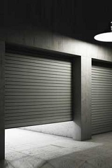

CAN’T GET YOUR GARAGE DOOR CLOSED OR OPEN? HERE’S WHAT TO DO!

If your garage door ever goes on the fritz, there are numerous reasons you could be having problems. Some are straightforward, and some are complex. Here are the most common possibilities and solutions.
Easy Issues
If your garage door won’t close, the photo eye sensors might be out of alignment. Your garage door has a photo eye on each side, and between them is an invisible beam, which when broken, for safety reasons keeps the door from closing. Look to see if they are misaligned or grimy. Depending on which brand and style of sensor you have, if the light is blinking, there’s something wrong. Or, you may have sensors with red and green lights, in which case the red one usually means it’s not working right.
Another problem with the sensors not functioning can be the wiring. Check the connections from the sensors to make sure the wires aren’t coming loose or hindered by corrosion. Another possibility is that there’s a short in the wiring somewhere, which can sometimes be caused by a staple used during installation; vibrations over the years can eventually trigger a disconnect. The wires can also become stretched, resulting in a disconnection.
Does your garage door opener run a few seconds, but then turn off? If your garage door still doesn’t budge, this can occur when the door’s shut and the motor tries but fails to lift the door. Try this:
1. Look at the springs.
2. Check the track for any obstacles.
3. Find out if your garage door has a built-in lock that’s engaging by mistake. This typically happens with older garage doors.
Does your garage door open and close at random? If your garage door opens or shuts by itself, even while you’re away, that’s a safety risk. But no worries. Here’s what you can try:
1. Make sure the transmitters aren’t stuck under an object that’s inadvertently pushing down on the control mechanism. For example, the transmitters may be under some items you’ve forgotten in your car, or somewhere else nearby.
2. Test the transmitters’ frequency. A neighbor may have your same exact frequency.
Does your garage door opener run, yet the garage door still doesn’t move? In case of power failure, your garage door opener comes with a disconnect switch that allows you to open or shut the garage door manually. This switch, generally attached to a rope or knob, can inadvertently get unhooked. What you can do:
1. Close or open the door manually all the way.
2. Securely reattach the hook.
3. Now using the transmitter, you can try opening or shutting the garage door again. It should work fine this time.
Does your door go down all the way, but then open again? Probably the open-and-close limit settings of the garage door opener are malfunctioning. The settings tell the garage door opener how far the door should move before it’s closed. If set too high, the door will touch the ground before the opener estimates it should, assuming the door’s hitting something in its path. If so, it will reverse to keep from crushing it. Read your operator’s manual to see how to set the open-and-close limits.
Complicated Issues
Does the garage door not go up at all? It’s likely your garage door spring needs attention. Your garage door might have one or two torsion springs, and one or both could be broken. The door will fail, or not even open. Professional attention is needed.
Does your garage door shut only part way, then open again? A garage door has a reversing mechanism to prevent it from crushing any object in its path. The reversing instruction can be triggered by any objects on the ground blocking the door’s path ~ such as a trash can, box, or bicycle. There could also be a buildup of debris on tracks ~ grime, gum, any small object, and so on ~ preventing the rollers from moving forward. This requires a professional.
Your garage door track may be out of alignment. This is serious. The metal track of your garage door must stay properly aligned, or it won’t move. Look for bends in the rails, or gaps between the rollers and the rail. As years pass, the garage door’s weight can compound these issues, so don’t procrastinate. Your door can become dangerous. Hire an expert.
Does the garage door shut with a bang? It could be a broken tension spring, which counters the door’s weight. Or, the cables connected to the tension spring might be broken. Either can be dangerous, and necessitates a garage door expert.
How to Prevent Future Issues
Follow a routine garage door maintenance schedule to prolong your garage door’s life. If you use your garage as a shop or game room, you’ll want to have an insulated door, and keep it in tiptop shape. Keep your garage door hinges, springs, and rollers lubricated ~ at least annually, before winter. Experts often say it’s best to lubricate every 3 months. Without lubrication, the springs will rust, and the coils will ultimately bind. Use a trustworthy brand, so it won’t dry out. A light coating is all that’s needed.
Schedule an annual inspection with your local garage door repair service. Springs, pulleys, wires, and cables require professional attention.
Once a month, inspect your garage door system’s components.
1. Replace worn parts.
2. Tighten down loose bolts.
3. If you ever notice strange noises when your garage door opens and shuts, investigate immediately.
At least every other year, clean your garage door to extend its life.
1. Wash both sides with a sponge and mild dish soap and water. Rinse well.
2. Wash the garage door opener sensor eyes with a clean, dry cloth.
3. Keep the area around the sensors free of cobwebs and grime.
4. For a steel garage door, if you want cold-weather protection, apply car wax.
5. For a wooden garage door, if you see signs of peeling or chipping, apply a fresh coat of paint.
DON’T adjust your garage door yourself, unless you’re an engineer! A garage door spring can actually cause severe injury, and even death. The cables, bottom brackets, and drums sometimes require adjustment. It’s time to hire a reliable garage door repair company. If you live in East Point, Georgia, consider a legitimate local company such as Complete Garage Door Repair.